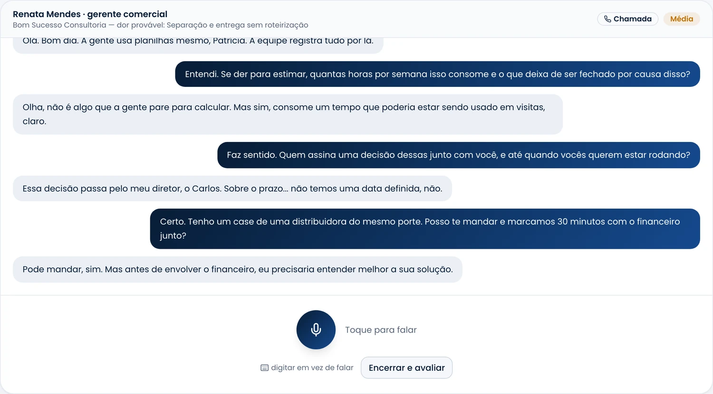

Sales Coach
salescoach.app.br
Sales Coach
salescoach.app.br
Antes da reunião
Ligue para um cliente
que não existe.
A IA faz o papel do lead e responde por voz.
Você fala como falaria na reunião de verdade.
Modo de treino · chamada de voz
